🗓️ Week 09
Digital elevation models
2015896– GEOMATICA BASICA
04 Jun 2025
Definitions
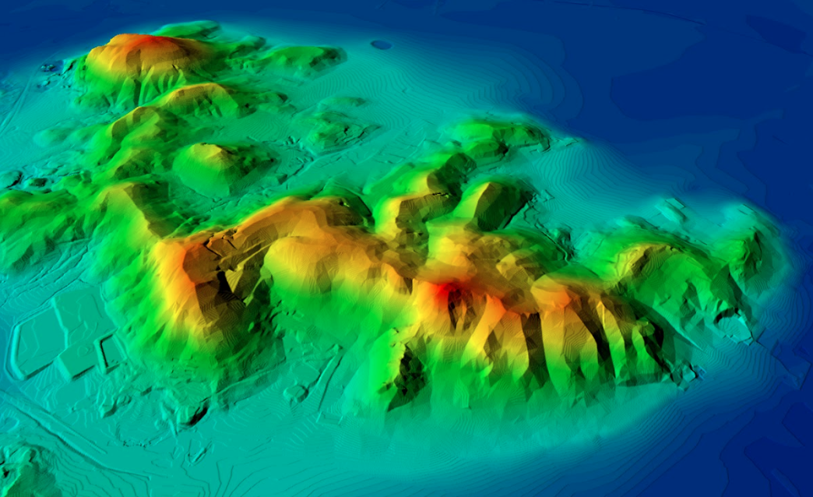What is a DEM?
A digital elevation model (DEM) is a general term representing ground elevation above sea level. In a DEM, all surface features (trees, buildings, bridges, etc.) are stripped away, and only the bare earth is represented.
A DEM shows:
Heights above sea level
Slopes
River beds
Landforms
DEM representation
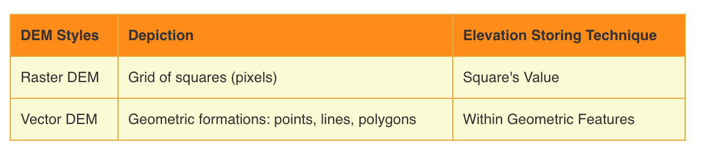
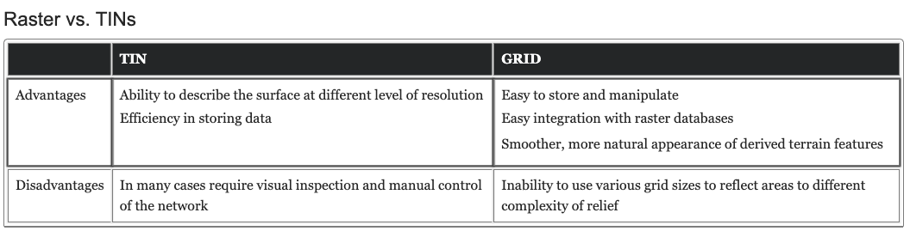
GRID vs TIN
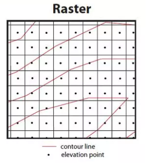
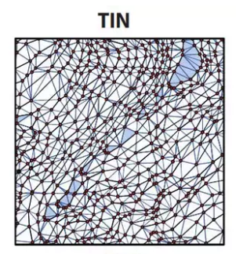
What is a DTM?
A digital terrain model (DTM) is a layer ‘on top’ of the DEM. It will show additional information that the bare earth DEM might not represent, including things like:
Breaklines are changes in the terrain on a surface
Manmade and natural linear features of the bare earth terrain, such as roads, railway tracks, flood defences, pipelines, coastlines, or rivers.
What is a DSM?
A digital surface model (DSM) is a type of terrain that includes all features above the bare earth - both natural and man-made.
It includes ground features such as buildings, infrastructure, trees, and vegetation. The layer will represent the height of all these features above the ground on which they stand.
DTM vs DTM (1)
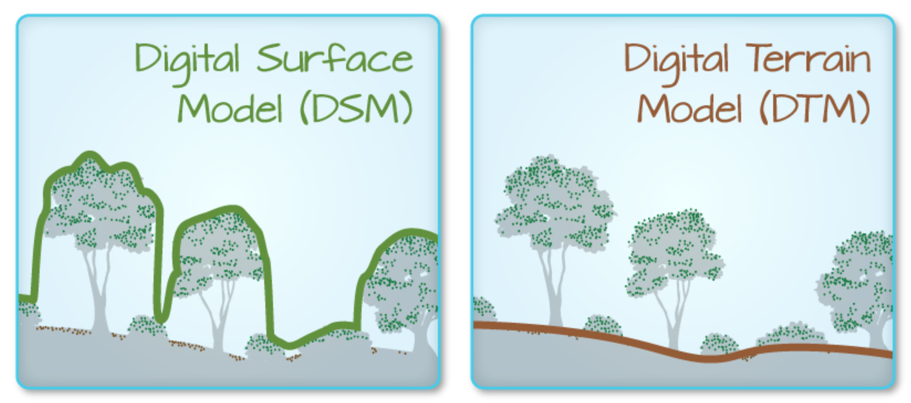CHM
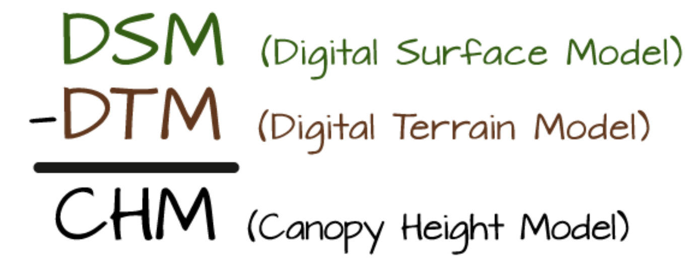
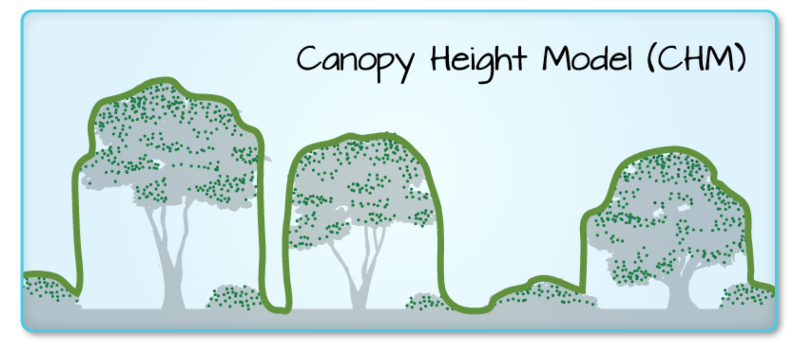
Uses of topographic data
Uses of DEMs & DTMs
DEMs and DTMs help us understand the ‘natural’ shape of the earth’s surface - without the ‘distraction’ of buildings, trees, or other infrastructure.
Both are especially useful for things like:
Hydrology
Terrain form
Slope stability
Simulations
Uses of DSM
DSMs show you both ground elevation and the height of everything above it. This allows you to understand how ground features interact with one another and the bare earth.
DSMs are useful for things like:
Radio frequency planning
Emergency planning
Line of sight planning
Smart city mapping
DSM vs DTM (2)
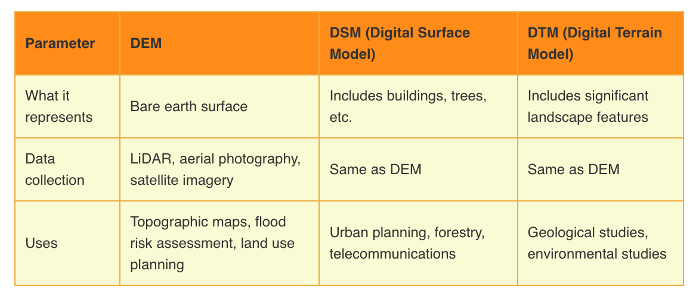Data acquisition
DEM projects
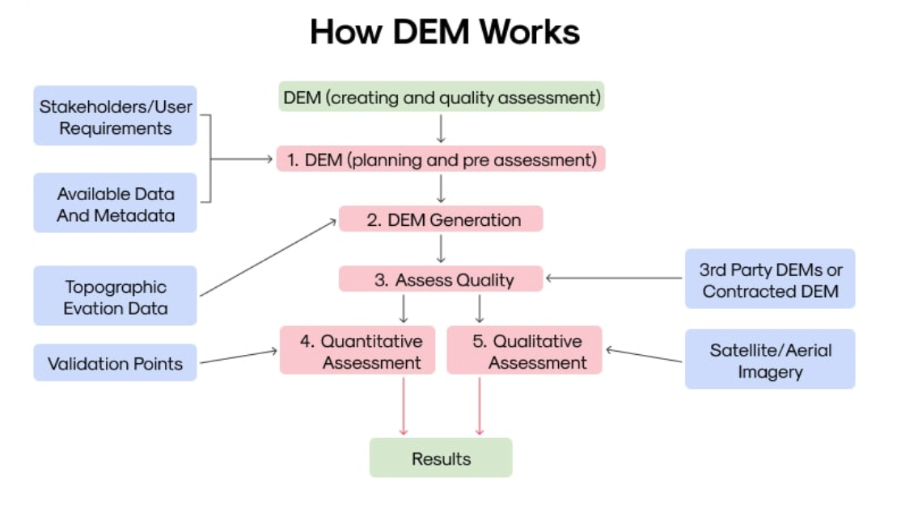Spatial resolution
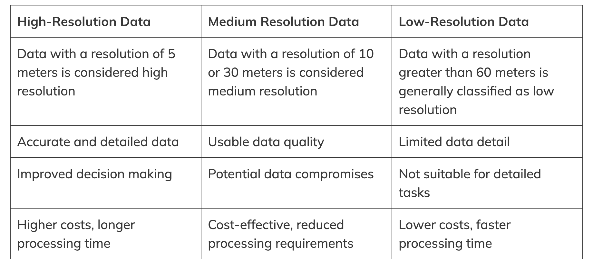Tecniques
Elevation data can be measured by:
field surveying
photogrammetry
cartographic digitization
airborne laser scanning
Field surveys
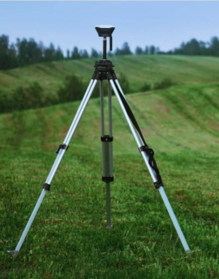
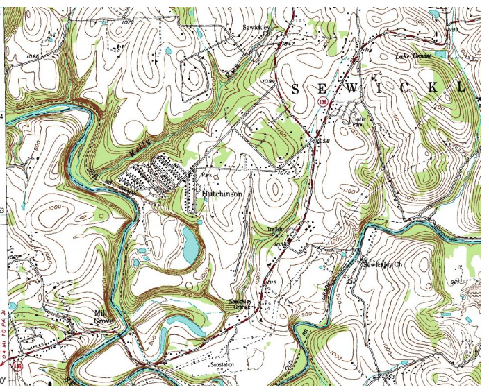
Photogrammetry
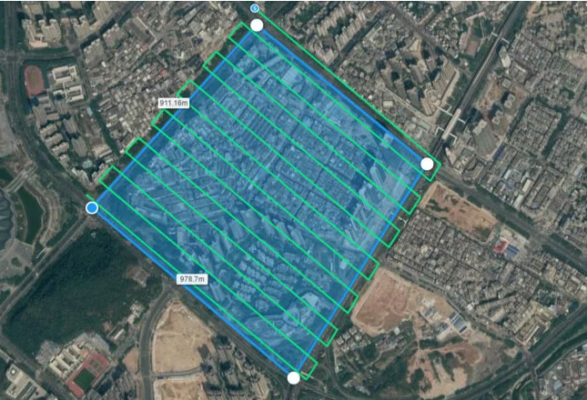
LiDAR
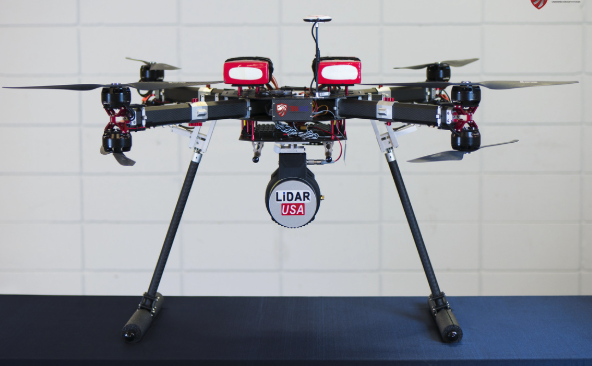
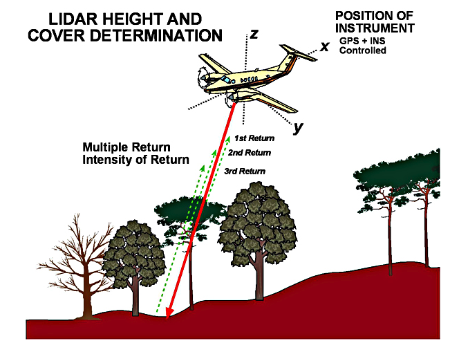
Vertical accuracy
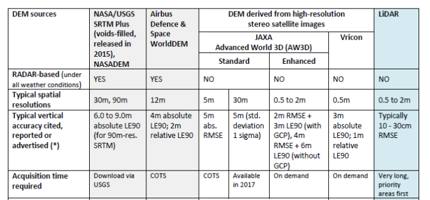Raster data in R
Let’s practice. Create an R notebook using this document.

2015896 – GEOMATICA BASICA